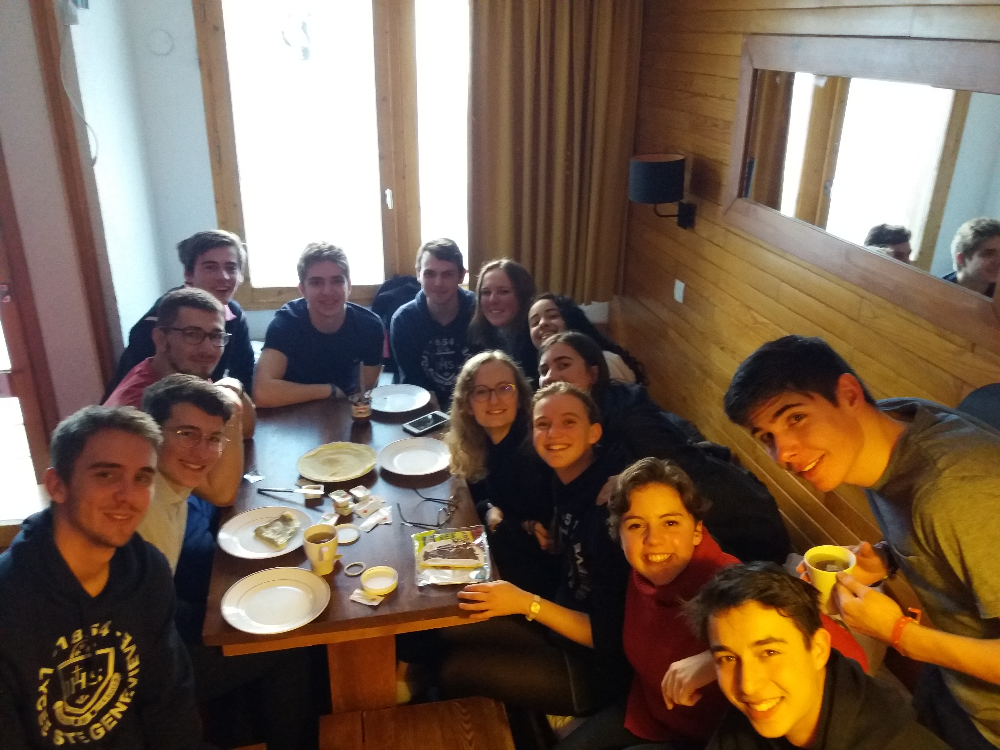
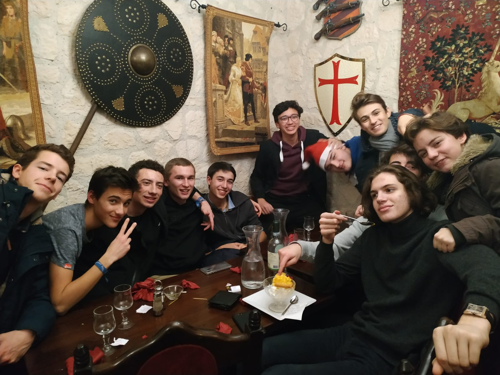
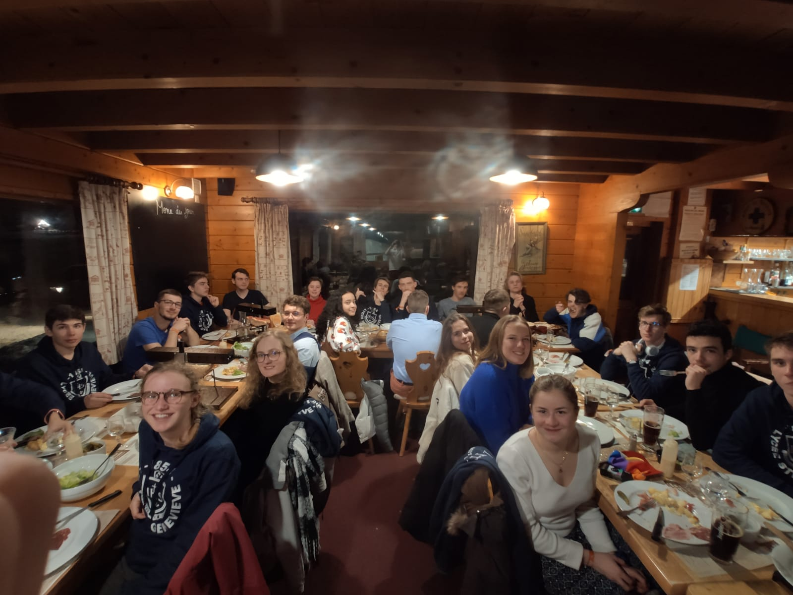
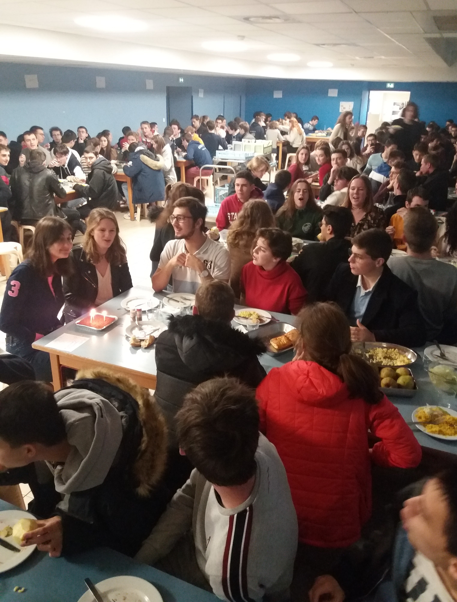
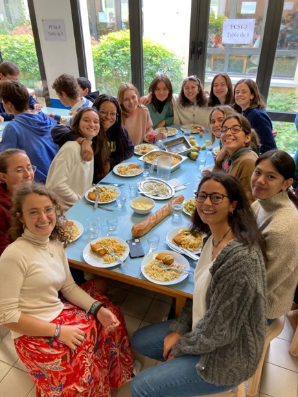
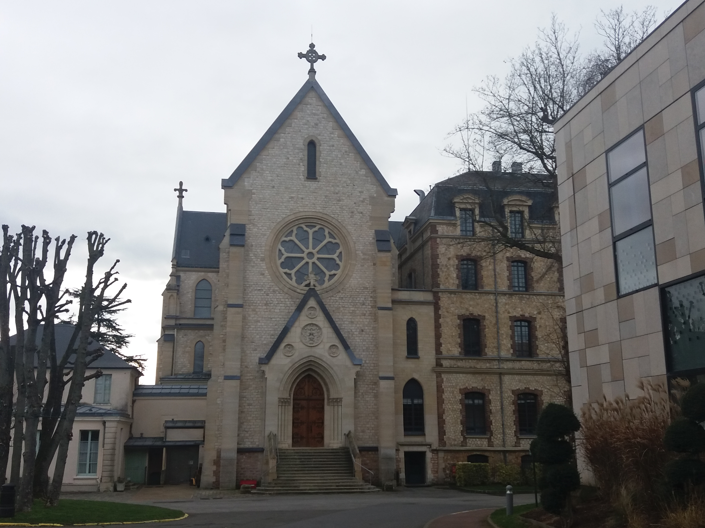

La (SUPer) vie en P3
En piston 3 nous sommes tous des rois !
Cher visiteur, bonjour,
Comme le dit le dicton, "Piston un jour, Piston toujours !"
Alors pour te donner l'envie de vivre et le désir de devenir un Piston, on t'en dit (un peu) plus sur ce qu'est la vie en P3.
Mais ne t'y trompe pas futur Sup, ce n'est qu'un aperçu de cette formidable aventure.
(NB: Pour ce qui est du Dard, de la Joute, des CD... et bien, TU VERRAS)

Notre Dame

Elisabeth et SFR

Notre Dame

Elisabeth et SFR
L'esprit-co en P3
Tu en as peut-être déjà entendu parler, ou pas du tout : l’esprit co. C’est - encore - une particularité de Ginette.
L’esprit co, c’est l’entraide, le soutien. A Gigi, chacun a des responsabilités pour faire vivre l’ambiance de classe.
Au sein de la P3, chacun a des responsabilités, qui permettent la cohésion et l’ambiance de classe. Cela fait partie du fameux
« esprit co » dont tu as peut-être déjà entendu parler, et qui est – encore - une des particularités de Ginette : à travers ses
« CD », à lire « Chargé De », chacun participe activement à la vie de la classe.
Personne ne pourra te dire avec certitude combien il existe de CD. D’une part parce qu’il y en a beeaaucoup, et d’autre part
parce qu’il y en a toujours de nouveaux qui apparaissent, ou d’autres qui, désuets, sombrent dans l’oubli.
Voici un (petit) aperçu des différents CDs…
Les CDs
-
CD Mucus
il est, selon moi, l’un des CD les plus importants, avec le CD Pomme. Le CD Mucus est adoré par tous les morveux de la classe : dès que l’on a la goutte au nez, il est là pour nous fournir un délicat kleenex dans lequel se moucher. Un must !
-
CD News
certes, à Ginette, on vit un peu dans une bulle… Mais ce n’est pas pour autant que nous ne sommes pas au courant des dernières news du jour ! Henri (alias Henridécrypte) est là pour nous transmettre les actualités les plus récentes - avec un attrait particulier pour les faits divers.
-
CD Photos
un rôle très important, puisqu’il s’agit d’immortaliser les moments passés à la BJ. Voir photos
-
CD Date
Célibataire depuis toujours ? Ne t’en fais pas, à Ginette, tu pourras trouver l’âme sœur. D’ailleurs, ton CD Date est là pour te filer un coup de pouce. Tu auras peut-être l’occasion de découvrir, un jour, un petit mot doux sur ton bureau, commençant par “Rendez-vous ce soir au terrain de volley à 19h00…”. Sûrement un coup de ton CD Date ! Le nôtre, c’est Pénélope, et elle est toujours au courant de tout, c’est impressionnant ! La légende raconte même qu’elle aurait assez de potins pour écrire un roman tout entier…
-
CD Câlin
Notre CD Câlin, c’est Charlotte. Charlotte, elle est toujours là pour te faire un câlin, et ainsi te remonter le moral
-
CD HB
Un CD à ne pas prendre à la légère. Grâce à lui, les dates d’anniversaire de tout le monde sont répertoriées, afin qu’on n’oublie malencontreusement personne. Il prend de plus le soin de faire à chacun un mot doux et bienveillant le jour de son happy birthday!
-
CD Citations
Un CD over cool, et je ne dis pas ça parce que c’est un de mes CD. En réalité, tout le monde est plus ou moins CD Citations. C’est un CD qui ne demande pas beaucoup de qualification, si ce n’est une réactivité hors pair pour dégainer son stylo lorsqu’un prof – ou un élève - laisse échapper une phrase iconique. Un petit exemple de perles qui seraient tombées dans l’oubli si les CD Citations n’avaient pas été là : « Vous pouvez lui envoyer un petit ceumeuceu… Un SMS, quoi. » (MOH) ou encore « Tout mathématicien fait des abus… Mais que des abus de langage !! » (Prof de maths)
-
CD Web
Que ferions-nous sans eux ? C’est grâce à ces véritables génies de l’internet et de la programmation, qui parlent un langage obscur à base d’acronymes déroutants (PHP, HTML, et j’en passe…), que vous pouvez lire ces quelques pages ! C’est également grâce à eux que vous n’avez pas à naviguer sur un site préhistorique, puisqu’ils ont donné un coup de jeune au site de la classe !
-
CD Tech et CD Club
eux ils sont toujours là pour mettre vlà l’ambiance
-
CD π&
Les rédacteurs en chefs, les journalistes, les reporters de la classe en quelque sorte, ils sont les représentants du fameux Pied ! … Ouais c’est le journal de l’école quoi...
-
CD Rock et CD Rockette
Eux ils sont là pour apprendre le rock à la classe
-
CD K$
Bien qu’on le surnomme généralement ‘le rat’, on l’appelle aussi parfois le Parrain de la P3, capable de faire chanter même le rab et la rabinette. Il est celui qui détient toutes les cartes en main, ou du moins la carte de la classe, puisqu’il s’occupe de gérer l’argent de la P3 et de sponsoriser les projets menés par celle-ci.
-
CD écolo
L’écologie relève des valeurs de Ginette. Les CD écolos de toute la BJ sont répartis dans différentes commissions (restauration, bâtiment, recyclage, communication) pour aider les bjiens à limiter leur empreinte environnementale. Être CD écolo est l’occasion de développer des projets à l’échelle de toute la BJ. Par exemple, cette année des corbeilles ont été installées dans toutes les piaules pour organiser la collecte et le tri du papier de la pougne qui s’avère être extrêmement papivore...
-
CD ménestrel
Tous les samedis à 13h15 sur le pratzen, le CD ménestrel est chargé de lancer l’hymne de la P3. C’est un moment over-solennel où la P3 réunie entre sups et spés se galvanise pour transer la pale.
La vie de Pistonne
Future supette (ou futur sup curieux), je suis sûre que tu te poses pleeeins de questions sur la vie de Pistonne, comme je me
les suis posées il y a quelques mois. Ça tombe bien, je suis là pour (essayer d’) y répondre.
Comme tu le sais sûrement, les filles sont beaucoup moins nombreuses que les garçons à se diriger vers des études scientifiques.
A Ginette comme partout ailleurs, elles sont donc en infériorité numérique : dans notre classe, nous sommes 13 Pistonnes, contre
30 Pistons.
Mais, ne t’en fais pas !!! Les Pistonnes ne sont pas pour autant moins bien intégrées dans la classe, loin de là, d’autant plus
que les pistons sont toujours over galants les pistonnes ! Tout le monde aime leur humour, leur bonne humeur et leur entrain.
Que deviendraient nos pauvres Pistons si nous n’étions pas à leurs côtés ?...
Les Pistonnes jouissent aussi de moments privilégiés entre elles, notamment les goûters pistonnes du lundi après-midi, et les
séances potins du midi. D’ailleurs, les Pistons jalousent secrètement la confidentialité qui règne entre les Pistonnes :
ce qui se dit entre Pistonnes, reste entre Pistonnes ! Il y a encore tant de choses qu’ils ignorent…
Sinon, quelques mots par rapport à l’organisation entre piaule de jour et piaule de nuit : comme à Ginette, nous les filles
sommes des princesses, nous disposons, non pas d’une chambre comme les garçons, mais de deux !! Eh oui, et pour le même prix.
Tu as donc une piaule de nuit, partagée avec une ou deux cos, qui peuvent être de ta classe ou non, et dans laquelle tu ne feras
que dormir, et une piaule de jour, partagée avec un ou deux cos. Dans cette piaule, c’est là que tu vas pougner, pougner et
repougner, mais aussi discuter, rigoler, manger… Le soir, à 22h45, les surveillants viennent nous rappeler –de façon plus ou
moins sympathique- qu’il est temps… que nous fichions le camp. Donc, à 22h45, on se dirige vers nos appartements.

Repas Pistonnes
La spiritualité en Piston
Ginette est souvent surnommée la BJ, mais savez-vous pourquoi ? Simplement pour Boîte à Jésuite.
Cependant, Ginette a beaucoup évolué en 165 ans et une grande liberté est aujourd’hui laissée aux élèves.
Ainsi, toutes les activités qui suivent sont proposées à la BJ, mais aucune n’est obligatoire.
Tout d’abord, une messe est célébrée chaque dimanche soir à la chapelle et est animée par les différentes prépas à tour de rôle. De plus, chacune de ces prépas peut se réunir en plus petit comité pour prier une fois par semaine (Mardi soir pour les Pistons).
Des veillées d’adoration ou de « prière Taizé » sont également programmées chaque mercredi soir.
D’autres évènements plus ponctuels sont aussi organisés comme les messes de rentrée, de Noël… ou encore le « mythique ... (suspens) »
Pour assurer la préparation et le bon fonctionnement de ces moments de spiritualité (mais pas que), les CD Lit et les Aumôniers veillent au grain.

Notre Dame